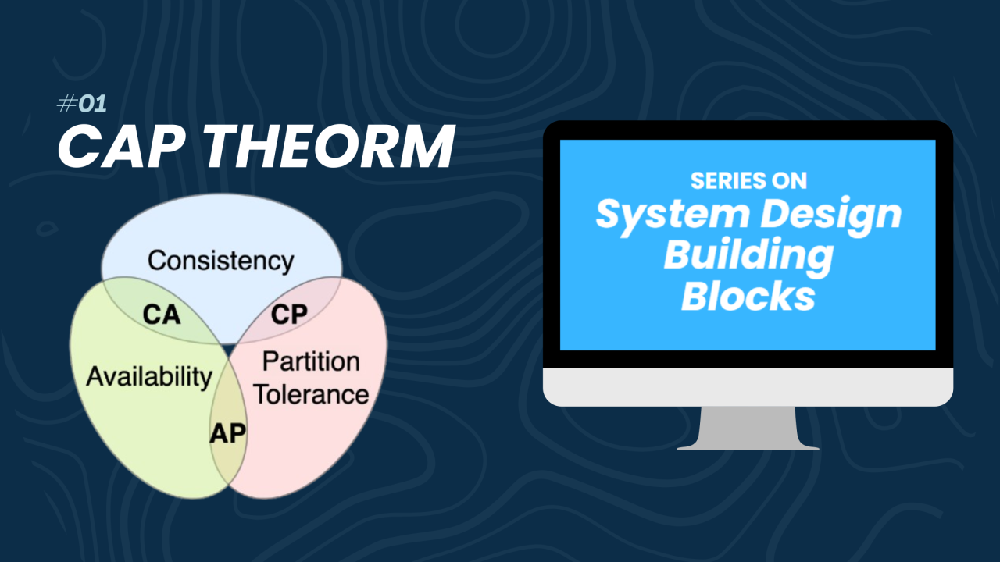
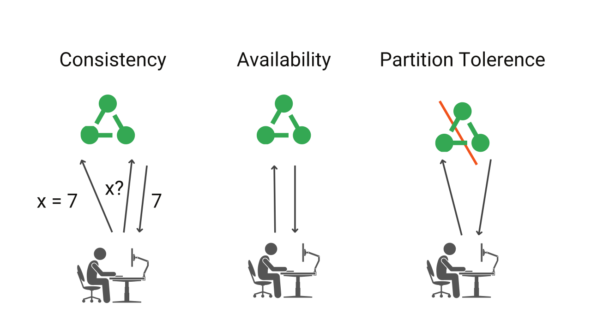
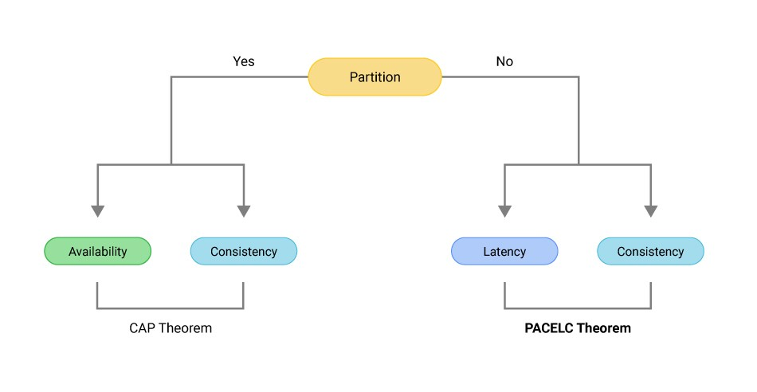

CAP Theorem Explained
Ashmita Pandey · · Distributed Systems · Databases

Hi everyone, I’m Ashmita 👋
Today, let’s break down one of the most important building blocks of system design → the CAP Theorem
What is the CAP Theorem
Introduced by Eric Brewer in 2000, the CAP Theorem helps us understand the core trade-offs in distributed systems.
A distributed system cannot guarantee all three of the following at the same time:
→ Consistency: Every read returns the most recent write or an error
→ Availability: Every request receives a non-error response, even if the data is outdated
→ Partition Tolerance: The system continues to operate even if some messages between nodes are dropped or delayed

The CAP Trade-Off
In the event of a network partition, a distributed system must choose between Consistency and Availability
Let’s look at each combination:
→ CP (Consistency and Partition Tolerance)
✓ Prioritizes correctness
✓ May reject some requests during partition to maintain data accuracy
✓ Used in financial systems and databases like MySQL or PostgreSQL
→ AP (Availability and Partition Tolerance)
✓ Keeps system responsive
✓ May return older or inconsistent data during partition
✓ Used in NoSQL systems like Cassandra and DynamoDB
✓ Example: Amazon’s cart always accepts items, even under heavy load
→ CA (Consistency and Availability)
✓ Possible only when there’s no network failure
✓ Seen in single-node systems
✓ Not feasible for real-world distributed architectures
Real-World Design Strategies
Choosing the right trade-off depends on your application’s needs
→ Eventual Consistency
Updates are spread across nodes over time
Used in DNS, CDNs, and systems where accuracy can wait
→ Strong Consistency
Once a write is confirmed, all reads return the latest value
Used in banking and inventory systems
→ Tunable Consistency
Flexibility to choose consistency level for each query
Available in systems like Cassandra Example: Strong consistency for orders, eventual consistency for recommendations
→ Quorum-Based Models
Operations require responses from a majority of nodes
Used in algorithms like Paxos and Raft
Beyond CAP → PACELC

CAP explains behavior during partition, but what about when systems are stable?
The PACELC model extends CAP:
→ If Partition happens → trade-off is between Availability and Consistency
→ Else (no partition) → trade-off is between Latency and Consistency
This model helps guide decisions even under normal operations
Closing Thoughts
The CAP Theorem isn’t about picking one ideal property It’s about making the right trade-offs based on your system’s goals
Understanding CAP helps us design distributed systems that are robust, scalable, and reliable
Thanks for reading!
Would love to hear your thoughts and questions in the comments
#SystemDesign #CAPTheorem #BackendDevelopment #DistributedSystems #EngineeringInsights